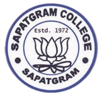

Sapatgram College


Welcome to Saptagram College!
At Saptagram College, we believe that education should empower individuals to achieve their fullest potential. Our mission is to provide quality education and support that fits the unique needs of our students.
Established in 1972, Saptagram College has been a cornerstone of academic excellence in the region. We recognized the need for quality educational opportunities and have continuously evolved to meet the demands of our students and the industry.
The Computer Science Department was established in 2012. We aim to provide cutting-edge education in computer science, preparing our students for a rapidly changing technological landscape.
We envision a world where quality education in computer science is accessible to all, empowering students to thrive in their personal and professional lives.
Have questions or want to know more? Feel free to reach out to us at info@saptagramcollege.edu or follow us on social media links above. We’d love to hear from you!
Thank you for choosing Saptagram College. Together, let’s explore the endless possibilities in the world of computer science!